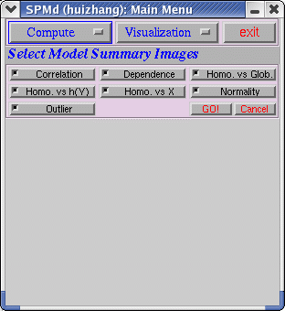
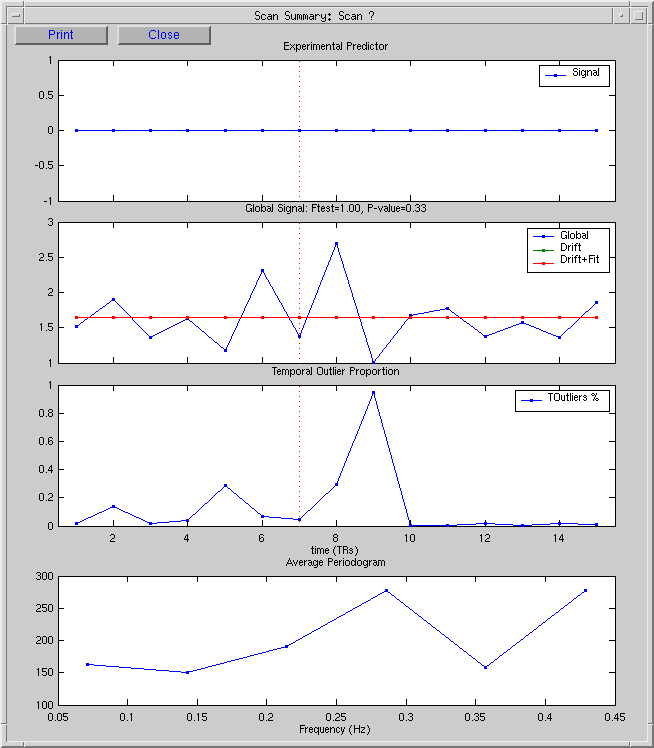
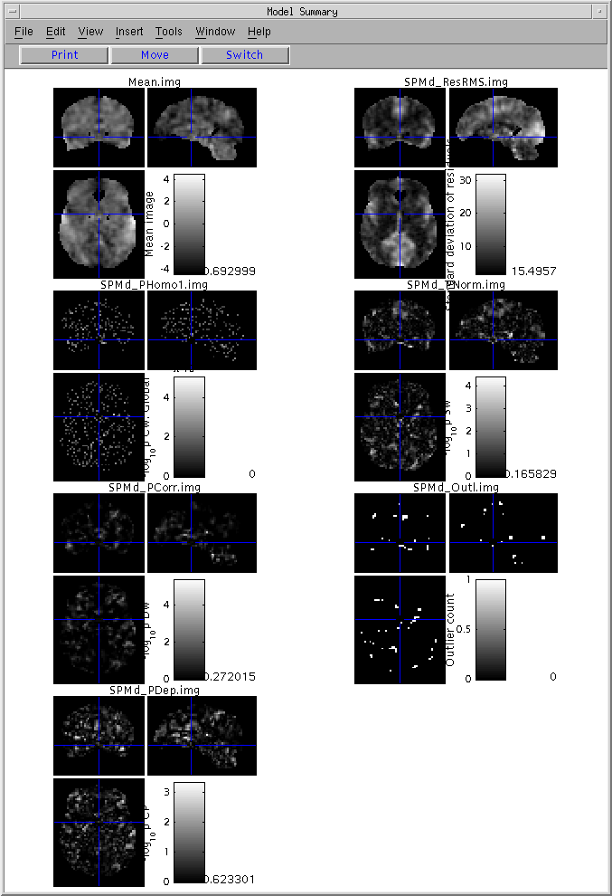
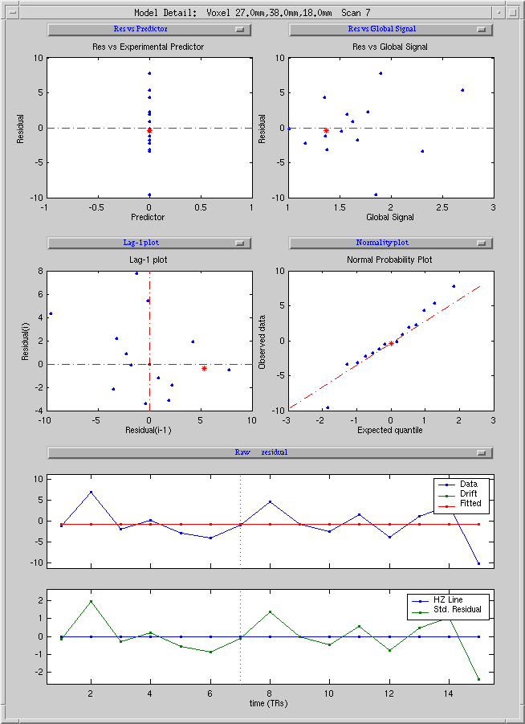

<div class="column-1"><div class="column-1-content">
                            
            <table cellspacing="0" cellpadding="0" width="100%" border="0" style="max-width: none;"> 
   <tbody> 
    <tr> 
     <td valign="top" align="left" width="20%"> </td> 
     <td valign="top" align="center" width="80%"> <h2 align="center">SPMd Example (Group Data)</h2> 
      <hr width="80%" size="4">  <p align="center"><em>By Wen-Lin Luo, Hui Zhang &amp; Thomas Nichols</em> </p> </td> 
    </tr> 
   </tbody> 
  </table>


<hr width="100%" size="4"> <!--=================================================================-->
<!-- N A V I G A T I O N - S I D E B A R - & - I N T R O  = = = = = =      -->

<table id="AutoNumber1" bordercolor="#111111" cellspacing="0" cellpadding="0" width="100%" border="0" style="border-collapse: collapse; max-width: none;">
  <tbody>
    <tr>
      <td align="center" width="33%"><a href="#Introduction">Introduction</a> </td>
      <td align="center" width="33%"><a href="#The Example Data">Example Data</a> </td>
      <td align="center" width="34%"><a href="#Manual">Manual</a> </td>
    </tr>
  </tbody>
</table>

<table cellspacing="0" cols="2" cellpadding="0" width="100%" border="0" style="max-width: none;">
  <tbody>
    <tr>
      <td valign="top" width="82%"><!--                                                      = = = = = =                                 -->
<!--                                                      = = = = = =                                 -->
</td>
    </tr>
  </tbody>
</table>

<h2><a name="Introduction">Introduction</a></h2>

<p>SPMd is a toolbox for SPM which you to establish the validity of inferences in fMRI modeling through diagnosis of linear model assumptions, <em>and</em> to characterize fMRI signal and artifacts through exploratory data analysis. It allows for models: </p>

<ul>
  <li>Single condition/session</li>
  <li>Multiple Conditions</li>
  <li>With/without high pass filtering</li>
  <li>With/without global scaling</li>
</ul>

<p>There are two restrictions for the use of SPMd </p>

<ul>
  <li>Multiple sessions</li>
  <li>No low pass filtering </li>
  <li>No intrinsic correlation</li>
</ul>

<p>The reference is: Luo, W-L and Nichols T. E. Diagnosis and Exploration of Massively Univariate fMRI Models. NeuroImage,19:1014-1032, 2003. </p>

<p>In this section, we analyze a single-subject block design fMRI data with the SPMd software. </p>

<p>Note: We assume you already have a model for this dataset, which users need to run the SPM analysis for the data before using SPMd! We also assume you have already had realignment file (*.txt or *.dat) for the dataset! </p>

<p><!-- Do we need the following part? -->
 The aim of web page is: </p>

<ul>
  <li>Give an example to demonstrate the steps of an SPMd analysis by analyzing the fMRI data. <!--
  <LI> Explain and illustrate the key role of exchangeability
  <LI> Provide a bench mark analysis for validation of an SnPM installation
-->
</li>
</ul>

<hr width="100%" size="3"> 
<div></div>

<h2><a name="The Example Data">The Example Data </a></h2>

<!--    L > E p a n a d i l s r t   h   e   o e o   x h n e b l t 
   L > P o i e a b n h m r   n l s s f r v l d t o   f a   n M i s a-->
<p>The data is a contest data. The contest is the result of an idea from the madic group in Orsay. The description of the data is found when you click this link. </p>

<hr width="100%" size="3"> 
<h2><a name="Manual">Manual</a></h2> 

<p>You need to download spmd at <a href="spmdreg">this link</a> before downloading the SPMd software. </p>

<ul>
  <li>Follow the instructions on the above web page to download and install SPMd.</li>
  <li>CDing a directory in which you save all SPM analysis results, </li>
  <li>In Matlab, if you have SPM99 and SPM2, please type </li>
</ul>

<dl>
  <dd><pre>&gt; SPMsel(2)</pre>
  </dd>
  <dd><pre>&gt; spmd</pre>
  </dd>
  <dd><pre>If you only have SPM2, please type</pre>
  </dd>
  <dd><pre>&gt;spmd</pre>
  </dd>
  <dd><pre>If you have already analyzed some data, please type</pre>
  </dd>
  <dd><pre>&gt;clear all 
</pre>
  </dd>
</dl>
<p>SPMd is split up into two components (1) <a href="#Compute">Compute</a> (2) <a href="#Visualization">Visualization</a>. </p>

<p>&nbsp;</p>

<center> 
  <p>&nbsp;</p>

  <hr width="100%" size="2"> 
  <p>First click on </p>

  <dl>
    <dd><pre><a name="Compute">Compute</a>      </pre>
    </dd>
  </dl>
 There are three choices in Compute, (1) <a href="#Model Summary">Model summary</a> (2) <a href="#Scan Summary">Scan summary</a> (3) <a href="#Scan Detail">Scan detail</a>.   <p>(1) The following interface will appear after clicking on "<a name="Model Summary">Model Summary</a>" </p>

  <p>&nbsp;</p>

  <center></center>
  <p align="left">After clicking "GO!", a pop-up window will let you choose the SPM.mat file that you explore the data and diagnose the statistical analysis. </p>

  <p align="center"> </p>

  <p align="right"><a href="#top">...to top</a> </p>

  <p>(2) The following interface will appear after clicking on "<a name="Scan Summary">Scan Summary</a>" </p>

  <p align="center"> </p>

  <p align="left">Before run "Scan Summary", the users run SPM and "Model Summary" first. After clicking "GO!", a pop-up window will let you choose the realignment file that you explore the data. If there is realignment file in the current directory, the software will do computing. </p>

  <p align="center"> </p>

  <p align="left">Since this is a group data, there is no realignment file needed in the analysis. Please choosing "No", in the "Scan Summary" window, the time series of realignment parameters will not be shown. </p>

  <p align="right"><a href="#top">...to top</a> </p>

  <p align="left">(3) The following interface will appear after clicking on "<a name="Scan Detail">Scan Detail</a>" </p>

  <p align="center"> </p>

  <p align="right"><a href="#top">...to top</a> </p>

  <p align="left">A pop-up window will let you specify a directory to save residuals' images. </p>

  <p align="center"> </p>

  <p align="left">This is a time-consuming section. It will cost 20~30 minutes or based on the users' computer system to finish all computing. </p>

  <p align="right"><a href="#top">...to top</a> </p>

  <hr width="100%" size="2"> 
  <p>Second click on </p>

<pre>	<a name="Visualization">Visualization</a>  </pre>
  <p>There are four choices in Visualization, (1) <a href="#Vscan Summary">Scan Summary</a> (2) <a href="#VModel Summary">Model Summary</a> (3) <a href="#VModel detail">Model Detail</a> (4) <a href="#VScan Detail">Scan Detail</a>. </p>

  <p align="left">(1) <a name="Vscan Summary">Scan Summary</a> </p>

  <p align="center"> </p>

  <p align="right"><a href="#top">...to top</a> </p>

  <p align="left">Select summaries the users are interested in, or just click "GO!" get them all. Since there is no realignment file, the "Shift Parameters" and "Rotation Parameters" options are automatically deselected. This is an example for selecting other options. </p>

  <p align="center"> </p>

  <p align="left">The user can specify the scan number by clicking on specified point in any one of the plots. </p>

  <p align="right"><a href="#top">...to top</a> </p>

  <p align="left">(2) <a name="VModel Summary">Model Summary</a> </p>

  <p align="center">&nbsp; </p>

  <p align="justify">The users have to DESELECT "Test Stat" and "Contrast" if there are not contrast and t images in the directory, otherwise, the software will crash. In this group data analysis, since it is no meaning to see whether the residuals are depended on predicted response and design matrix, the two options "Homo. vs h(Y)" and "Homo. vs X" are deselected. After selecting summaries the users are interested in, or just click "GO!" get them all. </p>

  <p align="center"> </p>

  <p align="right"><a href="#top">...to top</a> </p>

  <p align="left">(3) <a name="VModel detail">Model detail</a> </p>

  <p align="left">For an interesting voxel, right click that voxel in "Model Summary" or click "Model details" button inside the "Visualization" menu, the following figure is the result. </p>

  <p align="left">Before calling model detail, there should at least one spatial window opened, so that the spatial position could be specified. If both spatial window exist, this function will automatically select the spatial position in the most recently clicked spatial window. </p>

  <p align="left">This figure includes 6 diagnostic plots: </p>

  <ul>
    <li> 
      <p align="left"> Residual vs experimental predictor </p>

    </li>
    <li> 
      <p align="left"> Residual vs global signal </p>

    </li>
    <li> 
      <p align="left"> Absolute value of residual vs. experimental predictor </p>

    </li>
    <li> 
      <p align="left"> Absolute value of residual vs. global signal </p>

    </li>
    <li> 
      <p align="left"> Lag-1 serial plot </p>

    </li>
    <li> 
      <p align="left"> Normality plot </p>

    </li>
  </ul>

  <p align="left">and 2 time series plots: </p>

  <ul>
    <li> 
      <p align="left"> Raw data, drift, and fitted data </p>

    </li>
    <li> 
      <p align="left"> Standard residual vs horizontal line </p>

    </li>
  </ul>

  <p align="left">Users can select any point in one plot, the corresponding point in other plots will be selected. </p>

  <p align="center"> </p>

  <p align="right"><a href="#top">...to top</a> </p>

  <p align="left">(4) <a name="VScan Detail">Scan Detail</a> </p>

  <p align="left">For an interesting time point, click "Scan Detail". This will bring up a sequence of studentized residual images just before, during and after the point of interest. (If you did not create residual images, you will get a warning and will see the raw data images instead). </p>

  <p align="left">Before calling scan detail, scan summary window should be opened. </p>

  <p align="center"> </p>

  <center> 
    <p align="right"><a href="#top">...to top</a> </p>

    <p>&nbsp;</p>

    <p align="left">We are looking forward to your feedback... don't be shy! Email us both at <a href="mailto:spmd-authors@umich.edu">spmd-authors@umich.edu</a>. </p>

    <p>&nbsp;</p>

    <hr> 
    <ul>
      <li style="text-align: left;">Back to <a href="../spmd">main SPMd page</a> </li>
      <li style="text-align: left;"> 
        <address><em>SPMd</em> by Wenlin Luo &amp; Tom Nichols</address>
      </li>
    </ul>

  </center>
</center>


                                
                                
                            
                        </div></div>